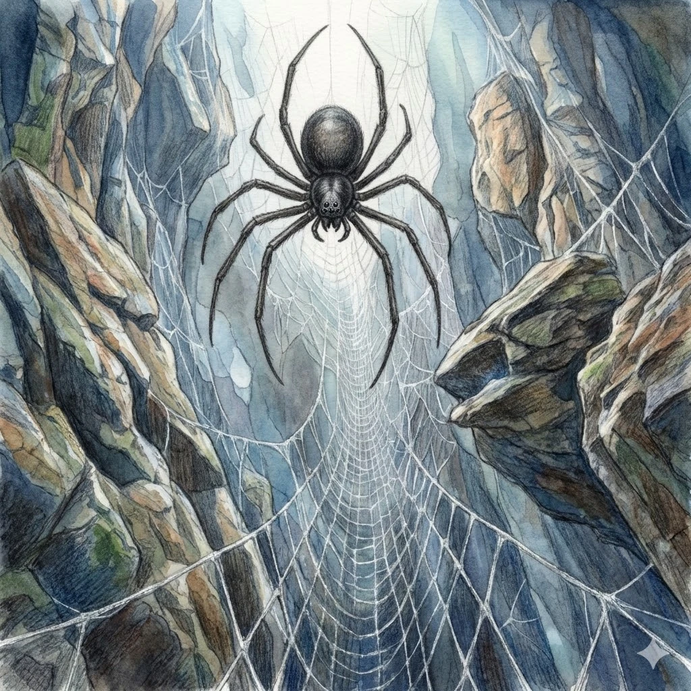

???
???
Für diese mögliche Unterart liegt noch kein gesichertes Dossier vor.
Aleria · Hochgebirge, Schluchten und Steilwände · Archivblatt V / VI
Riesenspinnen · Netzjäger vertikaler Lebensräume
Langbeinige Architekten des Abgrunds, die gewaltige, mehrlagige Netze zwischen Felstürmen und Steilwänden spannen und ihren Lebensraum durch Geometrie statt Körperkraft beherrschen.

„Ein Seil trägt dich über den Abgrund. Ihr Faden entscheidet, ob du es je erreichst.“Warnspruch der Hochgebirgsführer
Sechs Merkmale · Skala 1–10
Die Gratspinne erzielt ihre hohen Werte durch die Kontrolle des Raumes. Körperkraft und Widerstandskraft fallen gegenüber anderen Riesenspinnen gering aus.
Quelle der Einordnung: Aus Netzgröße, vertikaler Jagdweise, Körperbau und Verwundbarkeit außerhalb des Netzes abgeleitet
Gratspinnen sind Architekten des Abgrunds. Ihre Netze überbrücken Schluchten, hängen zwischen Felstürmen oder ziehen sich wie Vorhänge durch senkrechte Wände. Sie beherrschen ihren Lebensraum durch Geometrie und Geduld.
Die beeindruckende Größe entsteht vor allem durch die Spannweite. Der Rumpf bleibt vergleichsweise klein, die Beine sind extrem lang, dünn und nahezu haarlos.
Im Nahkampf sind Gratspinnen zerbrechlich. An Felswänden und in ihren Spannfeldern trägt der lange Beinbau sie dagegen sicher über Lücken, die kein schwerer Jäger überwinden könnte.
Gratspinnen leben ausschließlich in Hochgebirgen, besonders an tiefen Schluchten, Steilwänden, Felstoren und ausgesetzten Gratlinien. Je größer und freier der überspannte Raum, desto günstiger ist der Standort.
Flache Gebiete meiden sie vollständig. Dort fehlen Höhe, feste Ankerpunkte und die Luftströmungen, die ihnen verraten, wo Beute in ein Netz geraten könnte.
Gratspinnen bauen die größten bekannten Spinnennetze. Mehrere Dutzend Meter breite, räumlich gestaffelte Lagen fangen Tiere ab, die fliegen, klettern oder vom Fels stürzen.
Gratspinnen sind keine Plage, aber landschaftsprägend. Sie greifen Menschen selten gezielt an; wer in ihr Netz gerät, kann sich jedoch kaum befreien. Viele Opfer sterben durch den Absturz, bevor das Gift wirkt.
Außerhalb ihres Netzes sind Gratspinnen hochgradig verwundbar. Im Spannfeld nutzen sie Sturzfallen, sich verengende Netzbahnen und Giftbisse aus sicherer Entfernung.
Das Durchtrennen einzelner Fäden ist riskant, weil Last und Spannung auf benachbarte Bahnen überspringen. Wer das Netz räumt, muss zuerst seine tragenden Anker erkennen.
Brutplätze liegen tief im Fels und häufig unterhalb der Hauptnetze. Jungtiere verbleiben lange im Netzverbund, bevor sie an dessen Rand eigene kleine Spannfelder errichten.
Die außergewöhnlich lange und elastische Seide eignet sich für Seile, Netze und leichte Brücken. Eine Jagd auf lebende Gratspinnen ist selten; nutzbare Fäden werden bevorzugt an aufgegebenen Randnetzen gewonnen.
Manche Gebirgsbewohner lassen alte Netze bewusst stehen, wenn sie lockeres Gestein sichern oder als zusätzliche Sperre vor einem gefährlichen Abstieg dienen.